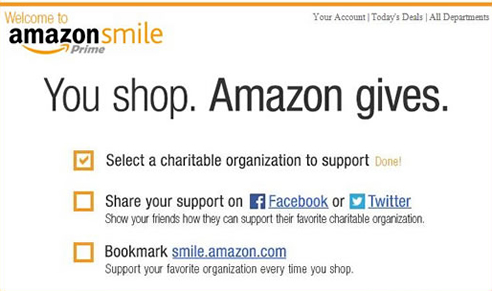
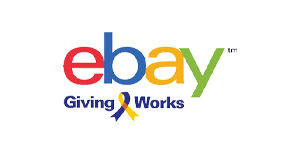
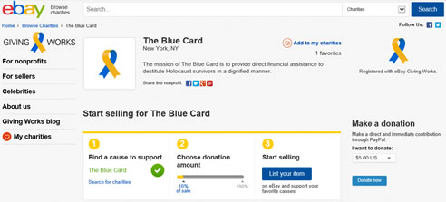

There are many different ways for someone to become involved. The biggest way for anyone to become involved is by helping us raise awareness for our mission. Follow us on social media and tell your circle about The Blue Card. Join Team Blue Card if you run marathons, organize fundraisers at school during Holocaust Remembrance Day, submit a virtual video to a homebound Holocaust survivor so they feel less alone, donate to our mission and ask your employer to match your donation, and more!
Become Involved
Support The Blue Card with Amazon Smile and eBay Giving Works
See Instructions
- Next time you are looking to make a purchase with Amazon, go to smile.amazon.com and log on with your regular Amazon or Amazon Prime account.
- Once you have logged on, search for The Blue Card in the search bar under “select your own charitable organization”. Make sure to select the first choice, “Blue Card, Inc.”
- Once you have done that, Amazon will donate 0.5% of your eligible purchases to The Blue Card!

Once you select Blue Card as your charity of choice, you will receive an automated email from Amazon Smile with the following text:
“Dear Blue Card,
Thanks for visiting smile.amazon.com! Per your request, we have successfully changed the AmazonSmile charity you are supporting to Blue Card, Inc.. Remember, if you want Amazon to donate to Blue Card, Inc., you need to start each shopping session at the URL http://smile.amazon.com, and we will donate 0.5% of the price of your eligible purchases.
AmazonSmile: You shop. Amazon gives. smile.amazon.com“
If you have any questions, please feel free to reach out to Blue Card at
(212) 239-2251 or Info@bluecardfund.org
Thank you,
Blue Card
Program Director
The Blue Card
171 Madison Avenue, Suite 1405
New York, NY 10016
Phone: 212-239-2251
Fax: 212-594-6881
Izabella@bluecardfund.org
bluecardfund.org
Voted One of the 10 Highly Rated Non-Profit Organizations by
Charity Navigator.

See Instructions
- Log onto eBay with your regular account information and then go to www.givingworks.ebay.com.

- When you are looking to buy an item, make sure to search for The Blue Card under the category “Shop to Support Us” which will ensure that your purchase will also go towards aiding The Blue Card.
- When you are looking to sell an item, go to “Search for charitable organizations“, enter and select The Blue Card.
- Next, select “Start Selling for The Blue Card“. Here, you may select the percentage of the sale price that will support The Blue Card, anywhere between 10% and 100% of the sale price.
- Finally, if you are not interested in either buying or selling an item, you may also donate directly through Paypal to The Blue Card on the Giving Works page. Simply hit the donate button, located next to “Start Selling for The Blue Card“.
If you have any questions, please feel free to reach out to Blue Card at
(212) 239-2251 or Info@bluecardfund.org
Thank you,
Blue Card
Program Director
The Blue Card
171 Madison Avenue, Suite 1405
New York, NY 10016
Phone: 212-239-2251
Fax: 212-594-6881
Izabella@bluecardfund.org
bluecardfund.org
Voted One of the 10 Highly Rated Non-Profit Organizations by
Charity Navigator.